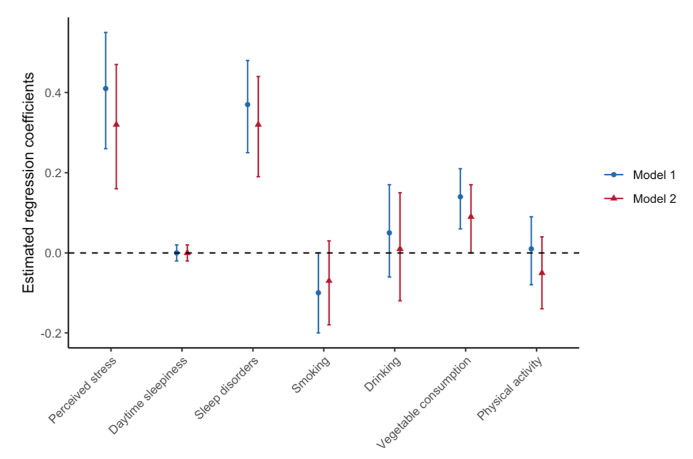

联合共建：银湾研究院、粤港澳大湾区研究院
电话：+86 13538048576地址：广东省深圳市福田区园岭五街8号


2020年11月，银湾研究院核心成员、哈佛大学陈曾熙公共卫生学院社会与行为科学系，与国际顶尖航空公司全日空控股集团、东京大学、哈佛大学等机构的跨学科团队合作，在《睡眠生物节律》期刊发表题为《生活方式因素与时差预防：日美商务舱旅客旅行健康的横断面初步分析》的研究论文。该研究首次基于大规模国际商务差旅人群样本，系统揭示了时差综合征严重程度的可调控生活方式因素，为跨国企业职业健康管理、国际差旅健康政策制定提供了循证依据。
我中心成员与研究团队利用向全日空控股集团日美两国常旅客发放的旅行健康调查问卷，共获得1759名日本籍、483名美国籍商务舱旅客的有效数据。通过多元线性回归模型，团队系统评估了压力水平、日间嗜睡、睡眠障碍、吸烟、饮酒、体力活动、蔬菜摄入七大类行为与心理健康因素与时差严重程度及具体症状的关联。研究发现：
核心发现一：睡眠障碍是时差困扰的首要风险因素。存在睡眠障碍的旅客，其时差严重程度感知显著增加（b=0.43，95%CI: 0.25-0.61），时差症状评分亦显著升高（b=0.32，95%CI: 0.19-0.44）。这一结论为航空公司及跨国企业将睡眠健康筛查纳入差旅前健康管理提供了直接证据。
核心发现二：体力活动与戒烟呈现显著保护效应。每周保持规律体力活动的旅客，其时差严重程度感知降低15%（b=-0.15，95%CI: -0.28至-0.02）；当前吸烟者反而报告更低的时差困扰（b=-0.15，95%CI: -0.30至-0.00），团队在讨论中审慎指出，这一“吸烟悖论”可能源于吸烟者因社交需求对时差的主观耐受，绝不能推导出吸烟具有保护作用的错误结论，反而应关注烟草对昼夜节律调控通路的破坏性影响。
核心发现三：心理压力与蔬菜摄入的复杂关联。高压力水平与时差症状严重程度呈强正相关（b=0.32，95%CI: 0.16-0.47）；而每日蔬菜摄入量较高者反而报告更多时差症状（b=0.09，95%CI: 0.00-0.17），这一反直觉发现提示：健康意识较强的人群可能对躯体不适更为敏感，在制定健康传播策略时需避免引发“健康焦虑”。
从职业健康政策视角，本研究具有三重突破性价值：其一，填补了国际差旅人群非药物时差干预的证据空白。既往研究多聚焦于褪黑素、光照疗法等生物干预，而本研究证实每周150分钟以上中高强度体力活动、睡眠障碍筛查转诊应成为企业差旅健康福利包的核心组成部分。其二，首次在亚洲与北美跨文化样本中验证了时差风险因素的稳健性，日美两国人群的效应方向高度一致，为跨国企业制定统一的全球差旅健康政策提供了文化适应性依据。其三，开创了航空公司与公共卫生学术界合作的新范式。研究团队与全日空控股集团的数据共享与伦理合规框架（哈佛大学陈曾熙公共卫生学院机构审查委员会批准），为民航业、酒店业等旅行服务商将客户健康数据转化为公共健康知识产品提供了可复制的合作模板。
研究团队在讨论部分特别强调，作为横断面研究，本结论无法确立因果关系，且商务舱旅客的社会经济地位特征限制了向全体差旅人群的外推。然而，鉴于全球每年超过14亿国际过夜旅客中，高频商务差旅人群承担着最沉重的昼夜节律紊乱负担，本研究已为后续干预研究指明了优先方向。基于此，团队正联合银湾研究院，启动“鹏程万里——高频跨境差旅人群职业健康保护”先导项目，拟与粤港澳大湾区跨国企业合作，开发基于可穿戴设备的体力活动干预程序，并验证企业级睡眠健康管理平台对降低时差相关工作效率损失的成本效益。
本研究标志着职业健康管理从“事故预防”向“昼夜节律健康投资”的理念升级。目前，研究团队已形成面向跨国企业、国际差旅服务商及职业健康管理机构的定制化服务能力，可提供：企业差旅人群健康风险画像分析、时差干预措施卫生经济学评价、跨国员工健康政策文化适应性评估、机舱健康服务产品效果验证等技术支持。我们期待与致力于提升国际差旅人群福祉的航空公司、跨国集团、保险机构及健康科技企业携手，共同将碎片化的时差应对经验，转化为系统化、可及性强的循证健康管理方案。
如您对本研究的政策转化、企业合作或定制化研究服务感兴趣，欢迎与我们联系：contact@greybay.org。
论文信息：
Lifestyle factors and jet lag prevention: a preliminary cross-sectional analysis of travel wellness among Japanese and U.S. business class travelers. Hana Hayashi, Akihiro Shimoda, Yue Li et al. Sleep and Biological Rhythms, 2021;19:127–136.
DOI: 10.1007/s41105-020-00297-3
原文链接：https://link.springer.com/article/10.1007/s41105-020-00297-3
